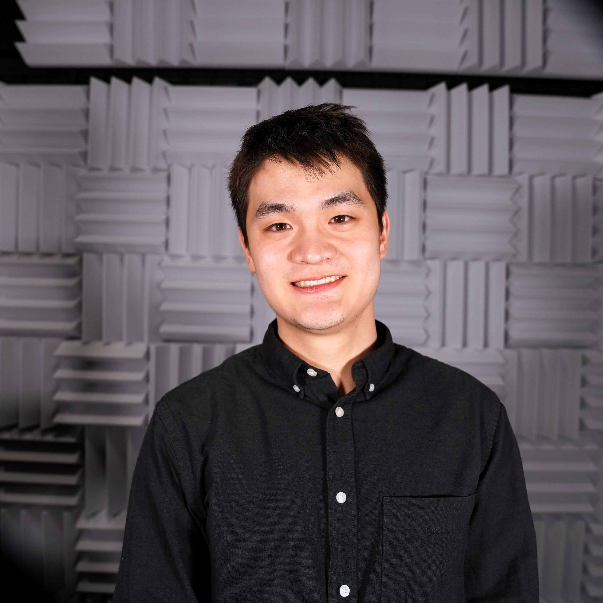
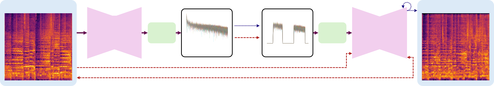
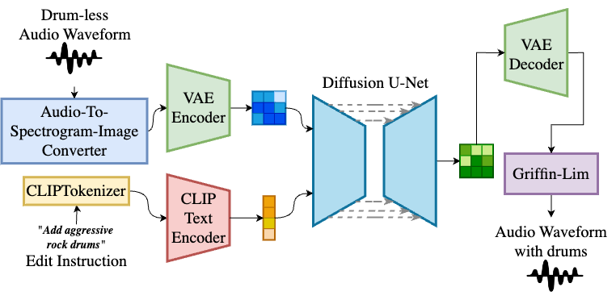
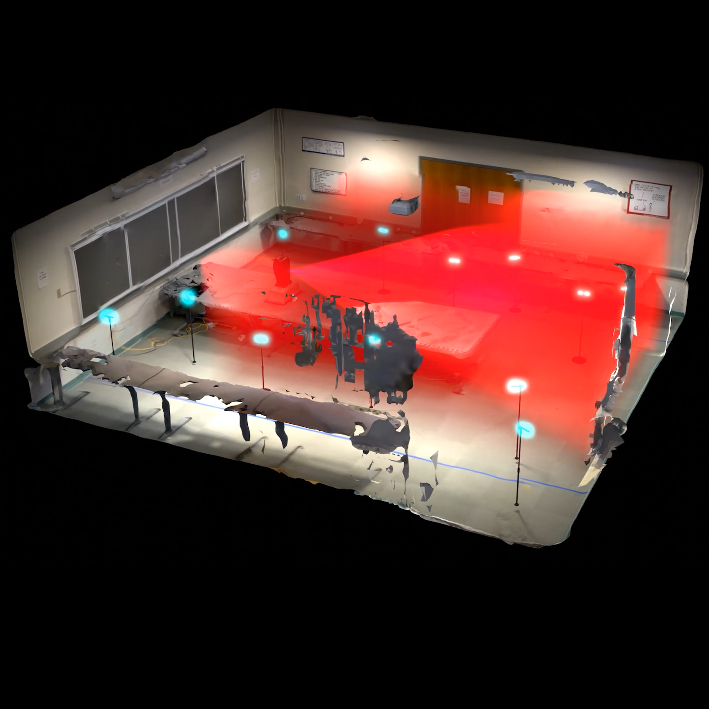
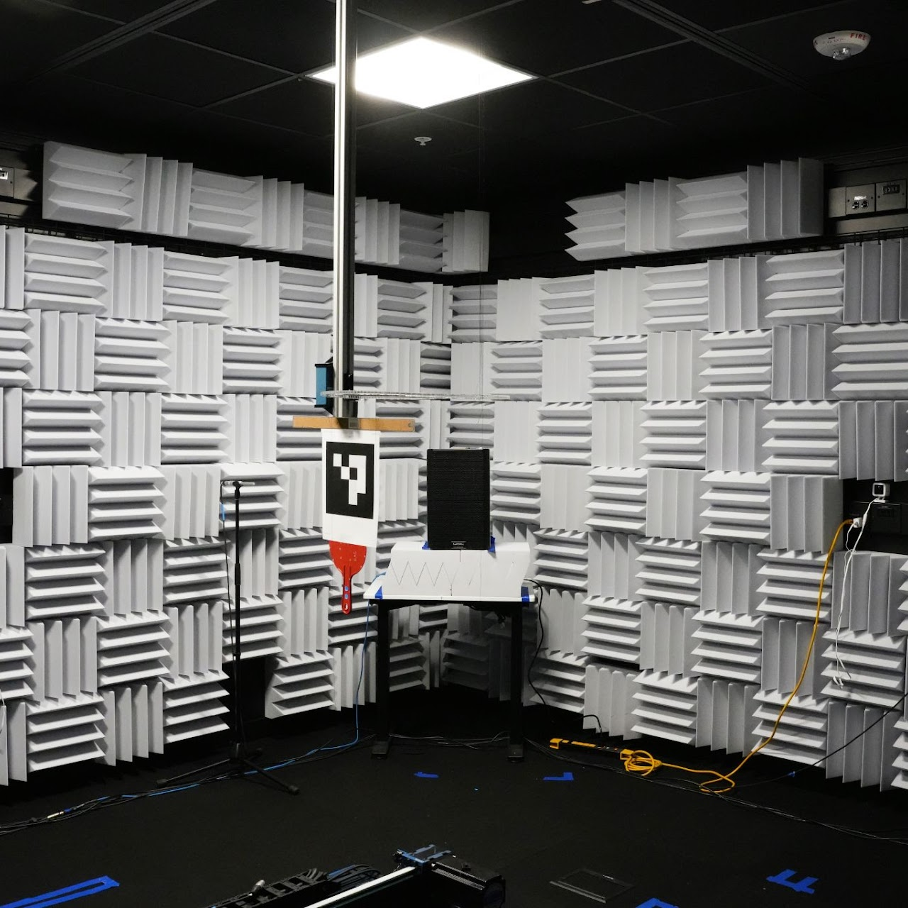
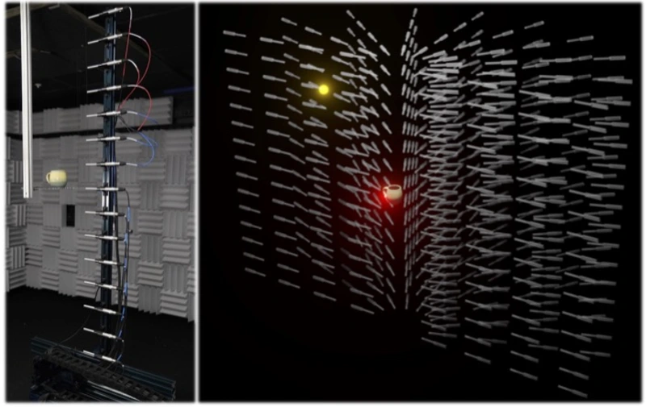

Mason L. Wang
I lead the Audio Understanding team at xAI. I was previously an EECS PhD student at MIT CSAIL, where I was working with Professor Anna Huang. I am interested in audio, multimodal models, generative models, and signal processing.
I received my master's in Electrical Engineering at Stanford University working at the Stanford Vision and Learning Lab. I was advised by Jiajun Wu and Mert Pilanci.
You can contact me at masonlwang32 [at] gmail [dot] com. Or, you can find me on X, LinkedIn.

Publications

Mason L. Wang, Cheng-Zhi Anna Huang
ICLR, 2026 (Oral, Top 1.1% of Submissions)
paper / website / code / arXiv
We introduce novel frequency-based control for audio generative models by manipulating latents in the frequency domain.

Ivan Villa-Renteria*, Mason L. Wang*, Zachary Shah*, Zhe Li, Soohyun Kim, Neelesh Ramachandran, Mert Pilanci
ICASSP, 2025
paper / examples
We use a dataset of full-mix songs, stem-subtracted songs, and LLM-generated edit instructions to train a stem editing/insertion model.

Mason L. Wang*, Ryosuke Sawata*, Samuel Clarke, Ruohan Gao, Elliott Wu, Jiajun Wu
CVPR, 2024
video / paper / website / dataset / code / arXiv
We create a method of capturing real acoustic spaces from 12 RIR measurements, letting us play any audio signal in the room and listen from any location/orientation. We develop an 'audio inverse-rendering framework' that allows us to synthesize the room's acoustics (monoaural and binaural RIRs) at novel locations and create immersive auditory experiences (simulating music).

Mason L. Wang*, Samuel Clarke*, Jui-Hsien Wang, Ruohan Gao, Jiajun Wu
NeurIPS Datasets and Benchmarks, 2023
project page / video / arXiv
Humans induce subtle changes to the room's acoustic properties. We can observe these changes (explicitly via RIR measurement, or by playing and recording music in the room) and determine a person's location, presence, and identity.

Samuel Clarke, Ruohan Gao, Mason L. Wang, Mark Rau, Julia Xu, Jui-Hsien Wang, Doug James, Jiajun Wu
CVPR, 2023 (Highlight, Top 2.5% of Submissions)
project page / video / arXiv
Everyday objects possess distinct sonic characteristics determined by their shape and material. RealImpact is the largest dataset of object impact sounds to date, with 150,000 recordings of impact sounds from 50 objects of varying shape and material.